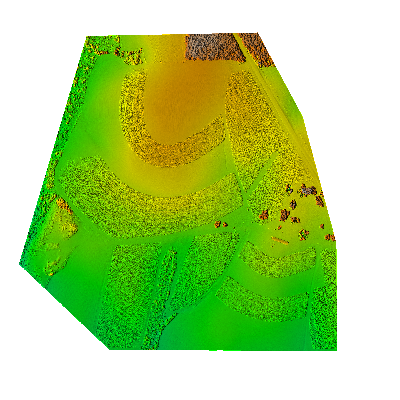
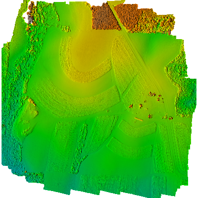
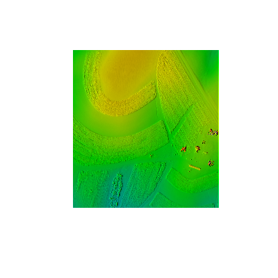
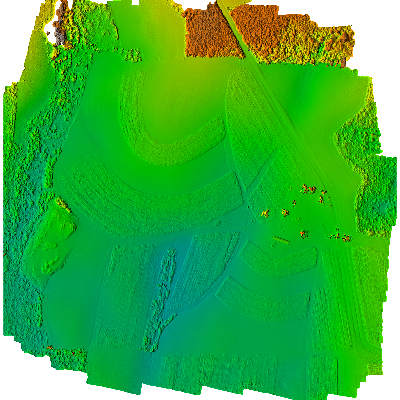
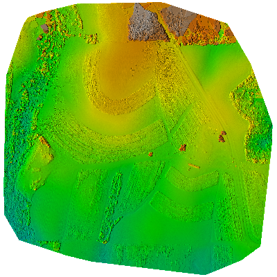
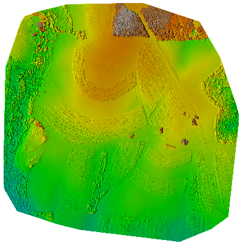

Raster map 2015_06_20_DSM_Trimble_11GCP@PERMANENT
Statistics
| Mean | 112.28610359212 |
| Variance | 27.490097965806 |
Image

Raster map 2015_06_20_DSM_agi_11GCP@PERMANENT
Statistics
| Mean | 111.389411147155 |
| Variance | 40.4670657994266 |
Image

Raster map 2015_06_20_DSM_agi_11GCP_cl@assignment5
Statistics
| Mean | 113.517379959282 |
| Variance | 13.8446070058514 |
Image

Raster map 2015_06_20_DSM_agi_noGCP@PERMANENT
Statistics
| Mean | 75.5206713043882 |
| Variance | 43.6427947030572 |
Image

Raster map 2015_06_20_DSM_pix4d_NoGCP@PERMANENT
Statistics
| Mean | 40.7353222406076 |
| Variance | 36.4205318986793 |
Image

Raster map 2015_06_20_pix4d_11GCP_dsm@PERMANENT
Statistics
| Mean | 111.411257723626 |
| Variance | 36.8567615385175 |
Image
